トイレにゆっくり入りたい・・・ [梅吉]
猫飼いの皆さんは夜中、早朝とにゃんこに起こされて
ゆっくり寝ていられない方がほとんどだと思いますが
我が家はゆっくりトイレにも入っていられません( ；∀；)
トイレに入るとドアの外で聞こえる梅吉のぎゃん鳴き。
鳴くぐらいならほっといてもいいじゃない、と思われるかも知れませんが
無視しているとドアにどっかんどっかん飛びついてきます ∞（エンドレス）
こ、壊れる〜
しょうがないので一人の時はドアを開けてトレイに入ってます！
（おお！カミングアウト！！）
で、あまりのうるささにドアを開けてみると影からのぞくカフェオレ・・・・
きゅるんっ
![[猫]](https://blog.ss-blog.jp/_images_e/101.gif) わし、ずっとここにいてたんやで。きづいてた？
わし、ずっとここにいてたんやで。きづいてた？
（あんだけ鳴いたら外の人も気づくわっ![[むかっ（怒り）]](https://blog.ss-blog.jp/_images_e/152.gif) ）
）

なあなあ、なんかおもしろいことしてや
まちくたびれるわ〜
はよう、いうてるやんか〜（ガリガリガリガリ・・・・

おっ！！

これや〜、これをまってたんや〜
モール必携。もちろんいつでも遊んでいただくためです。
一人じゃない時はもちろんトイレのドアは閉めますがその時は梅吉も一緒に中へ。
落ち着かないわ〜。
 ↑ガブッと一押し↑
↑ガブッと一押し↑
ゆっくり寝ていられない方がほとんどだと思いますが
我が家はゆっくりトイレにも入っていられません( ；∀；)
トイレに入るとドアの外で聞こえる梅吉のぎゃん鳴き。
鳴くぐらいならほっといてもいいじゃない、と思われるかも知れませんが
無視しているとドアにどっかんどっかん飛びついてきます ∞（エンドレス）
こ、壊れる〜
しょうがないので一人の時はドアを開けてトレイに入ってます！
（おお！カミングアウト！！）
で、あまりのうるささにドアを開けてみると影からのぞくカフェオレ・・・・
きゅるんっ
（あんだけ鳴いたら外の人も気づくわっ


モール必携。もちろんいつでも遊んでいただくためです。
一人じゃない時はもちろんトイレのドアは閉めますがその時は梅吉も一緒に中へ。
落ち着かないわ〜。
拭き掃除が好き！ [梅吉]
・・・・ってもちろん私ではありません。
フローリングを水拭きしていると必ず走ってやってくる梅吉さん。

拭いたばかりのまだちょっと湿っているところに
ずさささささーっとスライディング。
フローリングに湿り気があるから真新しい肉球印がくっきりてんてんと・・・ああ(꒦ິ⌑꒦ີ)

自分の足が濡れているとスライディングはさらに激しくなり興奮して転げ回ります。
足、洗面所でわざと濡らしてくるんですよ〜。
せっかく拭いたフローリングは濡れた足でびしょびしょです・・・ああ(꒦ິ⌑꒦ີ)

ぶるるんっと身震いをしてたくさん毛を落としてくれました。
湿ったフローリングに抜け毛・・・また拭き直しです・・・うわ〜ん(꒦ິ⌑꒦ີ)
窓拭き、床拭きキライです。
暑くなってきたら汗だくだくの作業になるので尚更です。
でも梅吉さんはせっせと汚しておかーさんが掃除しなければならない様に仕向けるのでした。
雨の日はアンニュイに [梅吉]
昨日、一昨日と大阪は雨が降ったりどんよりと曇ったり。
湿度が高くて不快なお天気が続きました。
湿気が苦手な札幌生まれ、札幌育ちの私・・・ツライ。

梅吉も冷蔵庫の上に引きこもっていつもの様に活発に動き回りません。

梅吉さんどうしたんですか？お加減でも悪いとか・・・
でも夜中に２回もおかーさんを起こして「おやつー！」とか
「なでてー！」とか元気いっぱい催促していましたよね。
いつまでも引きこもってないで遊びませんか？
ほらほら巨大猫じゃらし〜
（お掃除用のハンディワイパーです。そろそろ交換時期なの。
きちゃないのは気にせんといて！）

キロリ
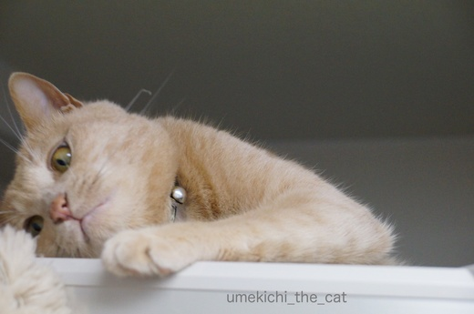
あ、釣れました(ﾉ≧▽≦)ﾉ
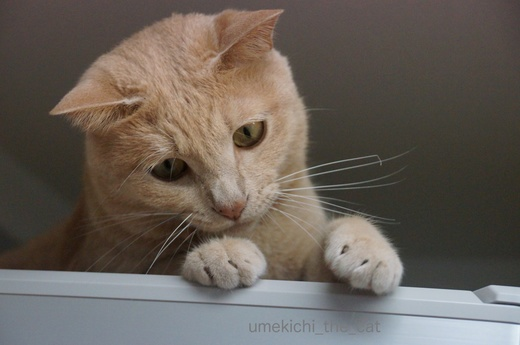
いったん遊びモードに入ったら興味津々巨大じゃらしを目で追います。

お耳の角度がわくわくを隠せませんね。

じ〜〜〜〜〜〜っ
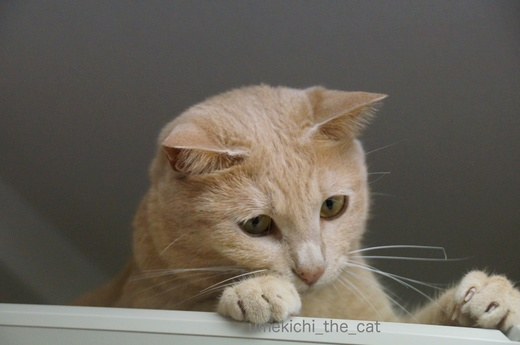
爪がにょき〜ん。
エンジン全開となった様です。
幼い頃は暑い寒い乾燥湿気、全く関係なく走り回っていたのですが
最近は不快な日、雨の日はだら〜んとしていることが多くなって来ました。
これも大人になった証なのですよね。
もちろんアホみたいに走り回る梅吉も健在ですww
↑ガブッと一押し↑
湿度が高くて不快なお天気が続きました。
湿気が苦手な札幌生まれ、札幌育ちの私・・・ツライ。

梅吉も冷蔵庫の上に引きこもっていつもの様に活発に動き回りません。

梅吉さんどうしたんですか？お加減でも悪いとか・・・
でも夜中に２回もおかーさんを起こして「おやつー！」とか
「なでてー！」とか元気いっぱい催促していましたよね。
いつまでも引きこもってないで遊びませんか？
ほらほら巨大猫じゃらし〜
（お掃除用のハンディワイパーです。そろそろ交換時期なの。
きちゃないのは気にせんといて！）

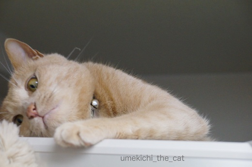
あ、釣れました(ﾉ≧▽≦)ﾉ
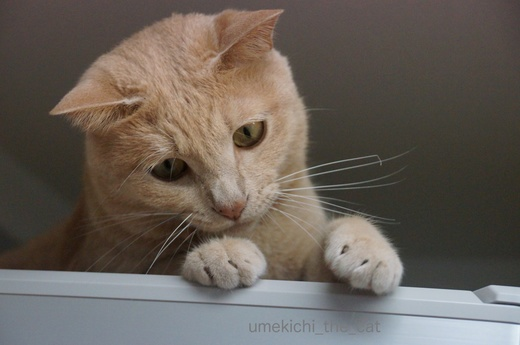
いったん遊びモードに入ったら興味津々巨大じゃらしを目で追います。

お耳の角度がわくわくを隠せませんね。

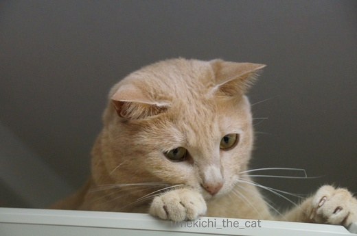
爪がにょき〜ん。
エンジン全開となった様です。
幼い頃は暑い寒い乾燥湿気、全く関係なく走り回っていたのですが
最近は不快な日、雨の日はだら〜んとしていることが多くなって来ました。
これも大人になった証なのですよね。
もちろんアホみたいに走り回る梅吉も健在ですww
お手頃価格が好き [梅吉]
まだまだ続く梅吉の抜け毛。
シャンプーでは処理しきれなかったので
グローブ型のブラシを買ってみました。

どうですか？梅吉さん。
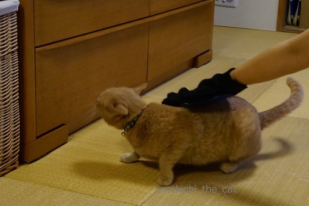
ファーミネーター程ではありませんがやっぱり嫌がります。
で、ダメもとで100円の櫛を買ってみました。

お膝の上で櫛を入れてみましたがトロトロです！

ほほ毛だって
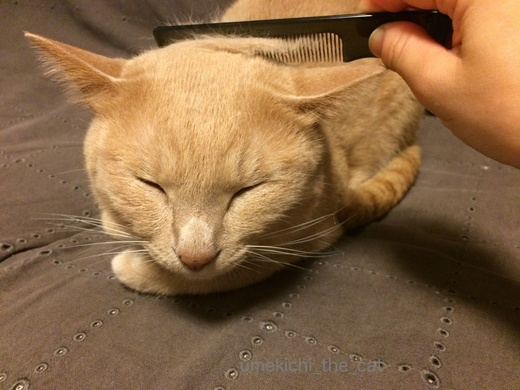
首回りだって
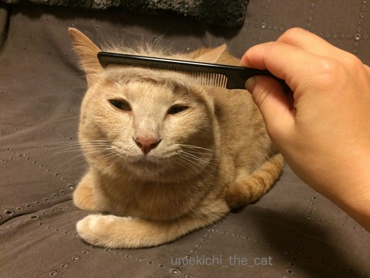
おでこだって行けちゃいます。
気持ちが良いのかぼよよよ〜んとしたブサ顔ww

たくさん抜けましたね。

カツラにしてみましたよ。
せっかくなので被ってみましょう。
不動産王としては必須アイテムかもしれませんよ〜。
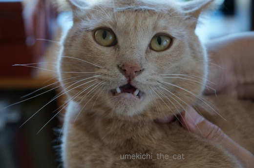
お気に召さなかったのかこんな顔されちゃいました・・・・
カツラほとんど写っていないし。
櫛＜グローブ＜ファーミネーターの順の価格なのですが
梅吉は一番お手頃価格の櫛が気に入った様です。
梅吉、フトコロに優しい子＾＾
またたび茶ふたたび [梅吉]
前回の記事で「酔っ払う系の植物に反応しない梅吉」と書いたのですが
若干ハイになる反応をするものが一つあります。
それがこれ。またたび茶、人間用です。
暑くなってきたので水分補給も兼ねて梅吉に振る舞って見ました。
それ、わしのやな！はようっ、はようっ！！
にゃ〜にゃ〜鳴きながらハッスルする梅吉さん。
人肌に冷まして水飲み容器に入れて「どうぞ」と振る舞ったのですが

ずぼ〜っ
好きなのはティーパックのお茶をだしていた湯呑み茶碗(⌒-⌒; )
お茶は底にうっすら残っている程度でほとんど入っていません。
変顔でひたってます。

何度も顔をつっこんで
遠い目。
中国茶に聞香杯というお茶の香りを楽しむための茶器がありますが
梅吉もそんなふうに湯呑み茶碗を使っている様です。
なかなか風流ではないですか！！
今回はまったりとまたたび茶を楽しんでいましたが幼い頃は大暴れ。
昨年夏の出来事です。
ちなみにその時の記事はこちら。
大人になり余裕を持ってまたたび茶を楽しむことができる様になりましたよ〜。
↑ガブッと一押し↑
若干ハイになる反応をするものが一つあります。
それがこれ。またたび茶、人間用です。
暑くなってきたので水分補給も兼ねて梅吉に振る舞って見ました。
にゃ〜にゃ〜鳴きながらハッスルする梅吉さん。
人肌に冷まして水飲み容器に入れて「どうぞ」と振る舞ったのですが

好きなのはティーパックのお茶をだしていた湯呑み茶碗(⌒-⌒; )
お茶は底にうっすら残っている程度でほとんど入っていません。
変顔でひたってます。

何度も顔をつっこんで
遠い目。
中国茶に聞香杯というお茶の香りを楽しむための茶器がありますが
梅吉もそんなふうに湯呑み茶碗を使っている様です。
なかなか風流ではないですか！！
今回はまったりとまたたび茶を楽しんでいましたが幼い頃は大暴れ。
昨年夏の出来事です。
ちなみにその時の記事はこちら。
大人になり余裕を持ってまたたび茶を楽しむことができる様になりましたよ〜。
初のフレッシュ・キャットニップ [梅吉]
ガーデニングの時期なのであちこちにちょっとした植木市が立つ様になりましたね。
先日のお散歩途中にあった植木市でキャットニップの苗を発見。
「梅吉のお土産！！」と即購入。

早速匂いを嗅ぎにくるすべてにもれなく参加猫、梅吉さん。
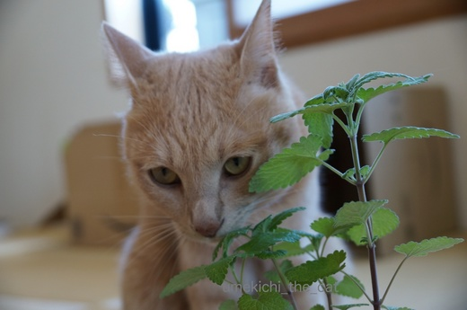
すんすんすんすん・・・・
目が座ってますよ(⌒-⌒; )
せっかくなので葉をちぎって軽くもんでみましょうか。

いかがですか〜？

ていっ！！！！
あ、おもちゃにしますか？
でもせっかくフレッシュ・リーフだから味わってみてはいかがですか・・・・
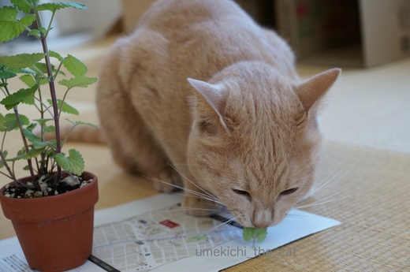
せやな。ほんなら・・・がぶーっ
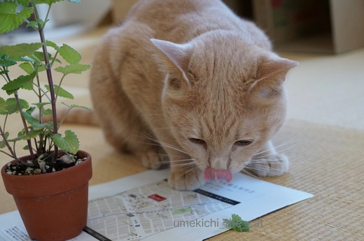
・・・・・
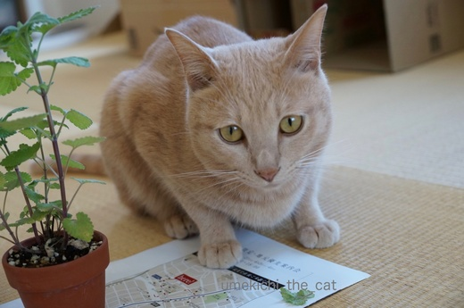
ま、わるないんやけどな。
マタタビの実、枝もそうなのですが梅吉は「猫が酔っ払う」と言われる植物にあまり反応しません。
人間にしたらお酒が強い、みたいな感じなのかな〜。
今回初めて知ったのですがキャットニップってミント系の植物なのですね。
苗を買った時に「他のミントは良いですか？」と聞かれて「へっ？」と思ったのですが
どうやら他のミントの葉とミックスしてハーブティーにすると美味しい様です。
生のままでは梅吉の反応が薄かったので今度は乾燥して与えてみようと思っています。
それでも反応が薄かったら私がお茶にして飲んじゃおうっと。
↑ガブッと一押し↑
先日のお散歩途中にあった植木市でキャットニップの苗を発見。
「梅吉のお土産！！」と即購入。

早速匂いを嗅ぎにくるすべてにもれなく参加猫、梅吉さん。
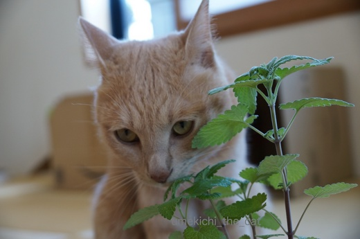
目が座ってますよ(⌒-⌒; )
せっかくなので葉をちぎって軽くもんでみましょうか。

いかがですか〜？

あ、おもちゃにしますか？
でもせっかくフレッシュ・リーフだから味わってみてはいかがですか・・・・
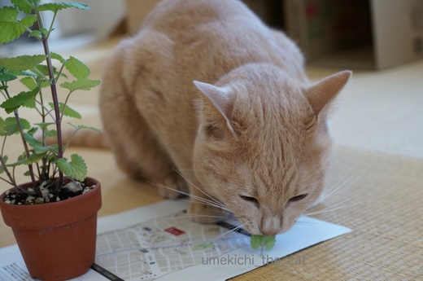
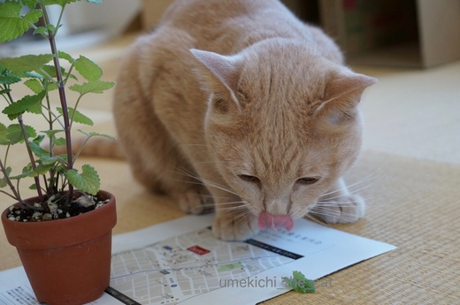
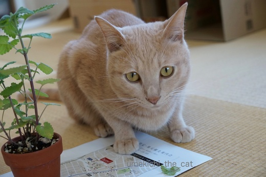
マタタビの実、枝もそうなのですが梅吉は「猫が酔っ払う」と言われる植物にあまり反応しません。
人間にしたらお酒が強い、みたいな感じなのかな〜。
今回初めて知ったのですがキャットニップってミント系の植物なのですね。
苗を買った時に「他のミントは良いですか？」と聞かれて「へっ？」と思ったのですが
どうやら他のミントの葉とミックスしてハーブティーにすると美味しい様です。
生のままでは梅吉の反応が薄かったので今度は乾燥して与えてみようと思っています。
それでも反応が薄かったら私がお茶にして飲んじゃおうっと。
不動産王Umekichi [梅吉]


またまた100均手作りおもちゃ [梅吉]
大きくしなる釣竿状のおもちゃ。
竿の先にかかっている獲物は

わぁ〜、凶悪顔の梅吉さん。
釣り上がったらリリースしちゃいそう(⌒-⌒; )
100均で買ってきた紙紐。適当にまるめて竿の先にくくりつけたら遊ぶ遊ぶ・・・
真剣です。

おひげもまゆげも全部前！
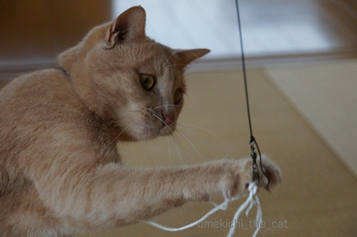
必殺の一撃。
これが「手作りおもちゃ」と胸を張れる代物かは別として
喜んで遊んでもらえておかーさんは嬉しいですよ。
つまらないのか、見えていないのか [梅吉]
錯覚画像を猫に見せたら面白い！というネット記事を見たので早速試して見る。
こちらのフリー画像をDLしてプリントアウト。
どんな反応するのかなー。ふふふふふ・・・
ほら、梅吉さん。動いて見えない？うねうねしてるでしょー。
・・・・・・・
あ、何かに気を取られていたんですよねっ。
場所を変えて見てみましょう。
今度はもう少し近くに寄せてっと、どうですか？
ふんふんふんふん
わし、すずめみてるほうがええねん。
残念ながら梅吉は無反応。紙を破っちゃうくらい興奮すると思ったんですけど。残念。
猫は実はあまり目が良くないらしいので
画像を近づけたり離して見せてみましたがやっぱり無反応でした。
うまく目で追えなかったのかな？
すばしっこいようでいてよくおもちゃを見失ったりしますからねー。
「いま、なんやわしの上をとおっていったで」みたいな顔しています。
梅吉にはお外でハンター暮らしは絶対に無理そうです。
↑ガブッと一押し↑
こちらのフリー画像をDLしてプリントアウト。
どんな反応するのかなー。ふふふふふ・・・
ほら、梅吉さん。動いて見えない？うねうねしてるでしょー。
あ、何かに気を取られていたんですよねっ。
場所を変えて見てみましょう。
今度はもう少し近くに寄せてっと、どうですか？
残念ながら梅吉は無反応。紙を破っちゃうくらい興奮すると思ったんですけど。残念。
猫は実はあまり目が良くないらしいので
画像を近づけたり離して見せてみましたがやっぱり無反応でした。
うまく目で追えなかったのかな？
すばしっこいようでいてよくおもちゃを見失ったりしますからねー。
「いま、なんやわしの上をとおっていったで」みたいな顔しています。
梅吉にはお外でハンター暮らしは絶対に無理そうです。
アイドルとカメラおじさん [梅吉]


カフェオレ色の梅吉

梅吉 2023年8月10日 永眠


梅吉と出会った譲渡会

犬猫の理由なき殺処分ゼロ
妄想広告
UMEKICHI 光

爆発的に早い！
時々攻撃的！
Thanks to Mr.Boss365
爆発的に早い！
時々攻撃的！
Thanks to Mr.Boss365